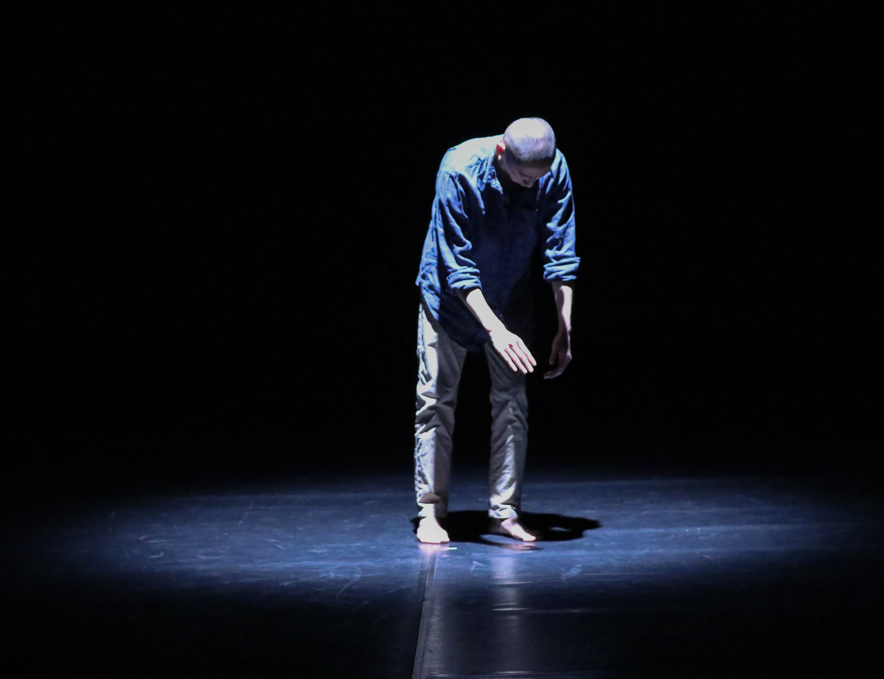

Colonialism
The Weight of Sound
A duet about power, violence, and silence told through sound and movement.
One figure amplifies the sounds of consumption eating, dragging, breathing while the other receives what remains: noises,
objects, pressure.
The piece reflects colonial structures through metaphor: Who is heard? Who is silenced? Who controls the narrative?
The performers' interaction reveals the tension between voice and voicelessness, dominance and survival an echo of the
historical and contemporary weight of colonial reality.

